数値入りサンプルで学ぶ
ガスタービンの設計情報管理
「どこに何を登録するか」「変更すると何が残るか」を、2つの設計案で体験するための操作マニュアルです。最初の一巡は約15〜20分が目安です。
起動とサンプルの構成
- アプリのフォルダにある
start_sample.batをダブルクリックします。 - ブラウザで http://127.0.0.1:8772/ が開きます。
- 「基準案 A」と「低回転案 B」が並ぶことを確認します。左メニューから、このマニュアルを開けます。
サンプルは samples/sample-designs.sqlite3 に保存されます。通常起動の data/designs.sqlite3 とは別です。サンプルを編集しても通常の案件には反映されません。再起動しても演習の変更は残ります。
| 用意したもの | 使い方 |
|---|---|
| 基準案 A / DEMO-GT-A | 8部品、23設計項目、未設定3項目。仕様・部品寸法・資料・メモを読む。 |
| 低回転案 B / DEMO-GT-B | Aを複製し、回転数・インペラ外径・効率目標などを変えた比較用の案。 |
| A_基準案.json / B_低回転案.json | 通常アプリの「JSONを取込」でも読み込める、添付資料付きの初期状態。 |
| 演習用の仕様書・CSV・追加資料TXT | samples フォルダ内。添付や資料の版管理を練習する。 |
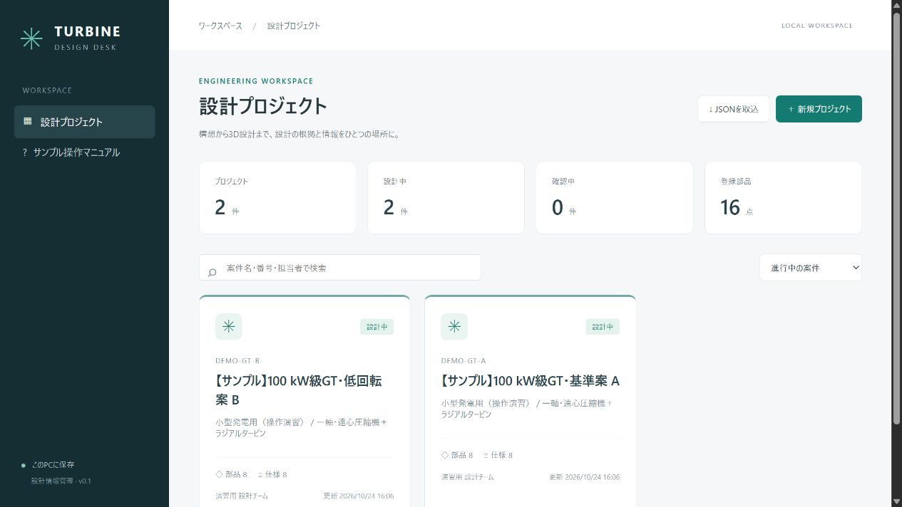
案件全体を把握する
- 「【サンプル】100 kW級GT・基準案 A」を開きます。
- 「概要」で部品8点・設計項目23件・未設定3件・関連資料3件を確認します。演習で項目や資料を追加すると件数も変わります。
- 「基本情報を編集」で用途・構成・担当・目的・状態の入力欄を確認します。変更しない場合は「キャンセル」で閉じます。
未設定の3項目は、熱効率目標、タービン材料、軸受剛性です。未知値を0や仮の確定値に置き換えず、空欄のまま管理しています。「出典未記入0件」は根拠欄の記入状況であり、根拠の正しさを認証する表示ではありません。
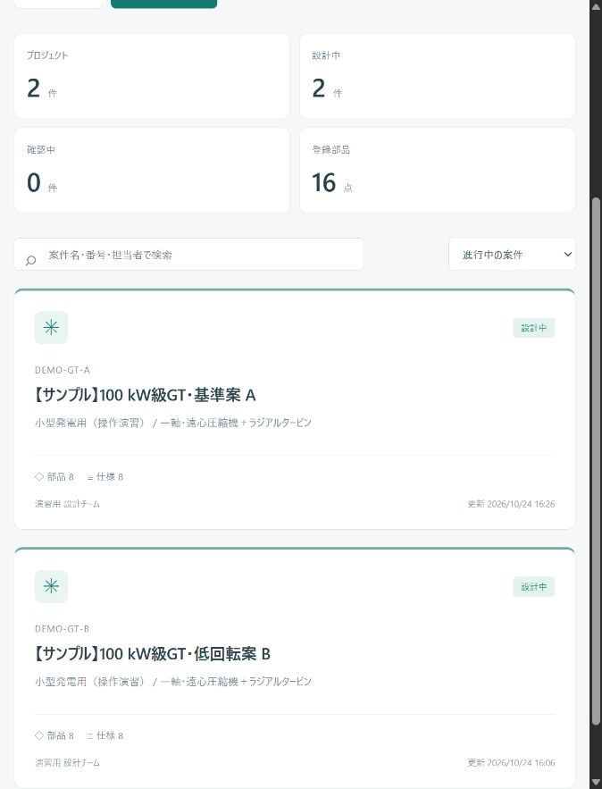
値・単位・出典をセットで登録する
「仕様・設計値」を開き、対象を「案件全体」にします。初期登録値は次のとおりです。
| 要求項目 | 基準案 A | 登録時に明示した定義 |
|---|---|---|
| 目標軸出力 | 100 kW | 要求値。性能計算の結果ではない。 |
| 設計回転数 | 60000 rpm | 共通軸の要求回転数。 |
| 空気流量 | 1.20 kg/s | 圧縮機入口の全流量。修正流量ではない。 |
| 圧縮機全圧比 | 3.8 | 出口全圧 / 入口全圧。 |
| タービン入口全温 | 1123 K | 静温と区別する。 |
| 大気温度 | 288.15 K | 演習で固定した環境条件。 |
| 大気圧力 | 101.325 kPa | 絶対圧。ゲージ圧ではない。 |
| 熱効率の目標 | 未設定 / % | 計算モジュール追加後に検討する。 |
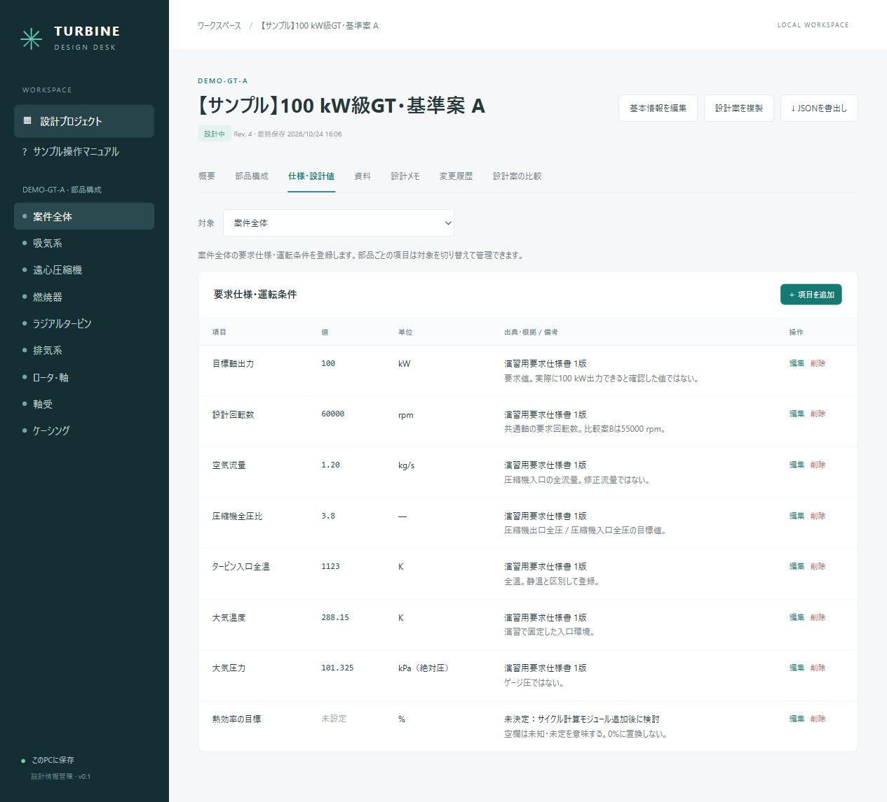
値は文字列として保存します。1.20 の表記や「未定」「110〜118」などを扱えますが、単位換算や数値の妥当性判定は行いません。数値として使用するのは、将来の計算モジュール側で定義を確認してからです。
部品ごとに設計値を整理する
- 左の「遠心圧縮機」を選ぶか、「仕様・設計値」の対象を「遠心圧縮機」に切り替えます。
- インペラ出口外径110 mm、入口チップ径48 mm、出口翼高さ6.5 mm、主翼6枚、スプリッター6枚、隙間0.30 mm、効率目標0.78を確認します。
- 「部品構成」では、部品の種別・段や位置・担当・状態・メモを編集できます。↑↓で登録順を変えられます。
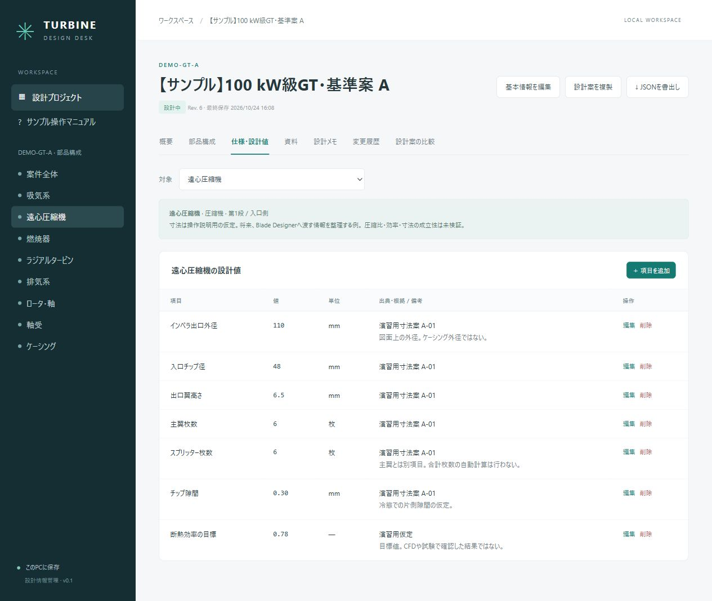
主流路図は流路種別の部品を登録順に並べた概略図です。抽気・分岐・軸接続を計算するネットワークではありません。部品を削除すると、その部品の設計値も削除され、関連資料・リンクは案件全体へ移ります。元に戻したい場合は履歴から復元します。
回転数を変えて、履歴から元に戻す
この操作は実際にブラウザで実施済みです。GitHub公開版にはDBを含めず、起動時に初期2案を生成します。公開版では、次の操作を実施すると変更・復元の履歴が作られます。掲載画像は作成時の実演記録です。
- A案の「仕様・設計値」で対象を「案件全体」にします。
- 「設計回転数」の行の「編集」を押します。
- 値に
62000、単位にrpm、出典に操作演習：回転数を一時変更と入力します。 - 備考に
保存後に履歴から60000 rpmへ戻す練習。計算は実行しない。と入力して「保存する」を押します。 - 表で62000 rpmになったことを確認します。
- 「変更履歴」を開き、今回の変更の直前のリビジョンを選んで「この状態に戻す」を押します。番号は操作回数によって異なります。
- 確認画面で「続ける」を押します。「仕様・設計値」で60000 rpmに戻ったことを確認します。
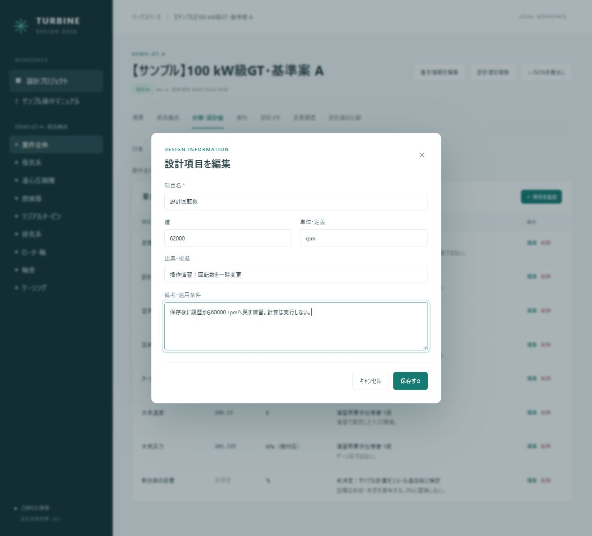
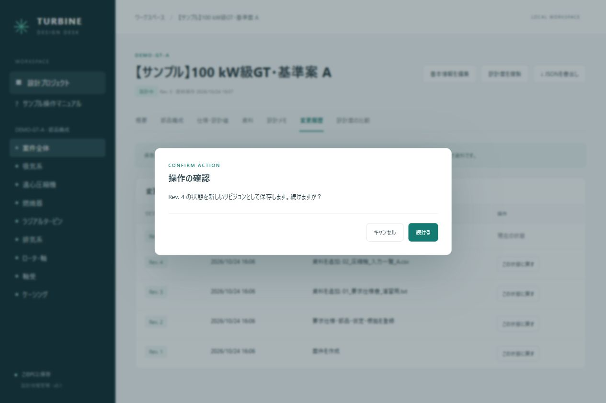
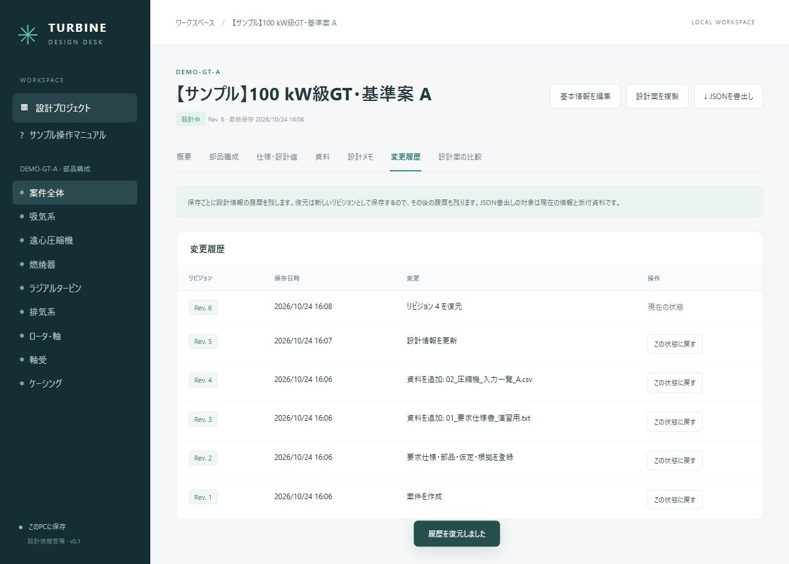
資料を部品に関連付けて保管する
- 「資料」を開きます。対象「案件全体」では、全部品の資料も表示します。
- 要求仕様書TXTが「案件全体」、圧縮機のCSVが「遠心圧縮機」に関連付いていることを確認します。
- 対象を「遠心圧縮機」に変えると、その部品に関連する資料だけになります。
- 「＋ ファイルを追加」で
samples/03_追加資料_演習用.txtを選択します。 - 追加した行の「保存」を押してダウンロードします。元の文面が保たれることを確認します。
- 追加した資料の「登録解除」を押し、確認画面で「続ける」を押します。登録が消え、履歴には残ることを確認します。
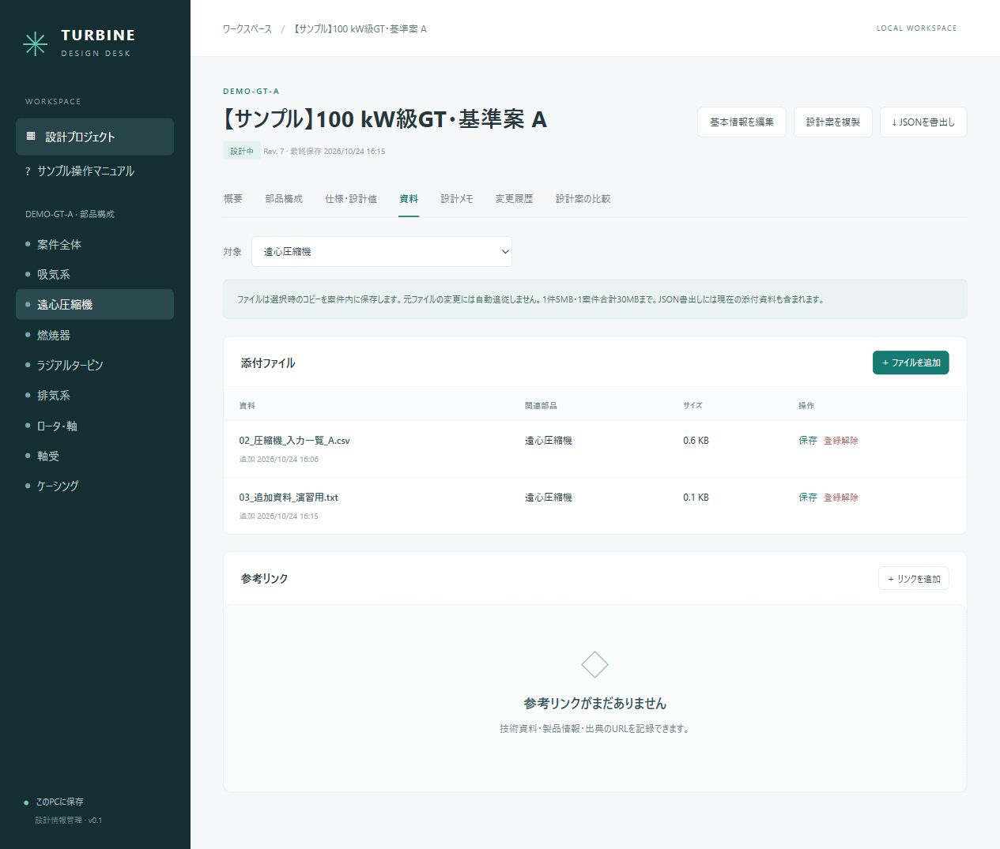
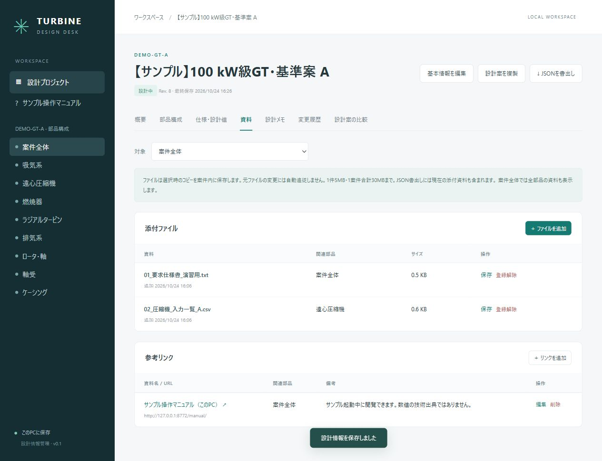
ファイルは登録時のコピーです。元ファイルを編集しても自動更新しません。B案にはA案のCSVを参照用に残しているため、CSV内の110 mmとB案の現在値118 mmは異なります。B案の設計メモにも版の違いを記載しています。資料名に版・案名を付け、必要なら新しい資料を追加してください。
「＋ リンクを追加」では、資料名・http/httpsのURL・関連部品・備考を登録できます。添付は1件5MB、現在の登録合計は1案件30MBまでです。
値の背景にある判断を残す
「設計メモ」で「この案件の読み方」「基準案Aと低回転案Bの検討」を読みます。B案には、変更内容と添付CSVの更新要否を記したメモもあります。
- 「＋ メモを追加」を押します。
- 件名に
演習：回転数を変更した理由、本文に低回転案を比較するために条件を変更した。性能成立性は今後の計算で確認する。と入力して保存します。 - 改行を含む本文が表示されることを確認します。削除する場合も確認画面が出ます。
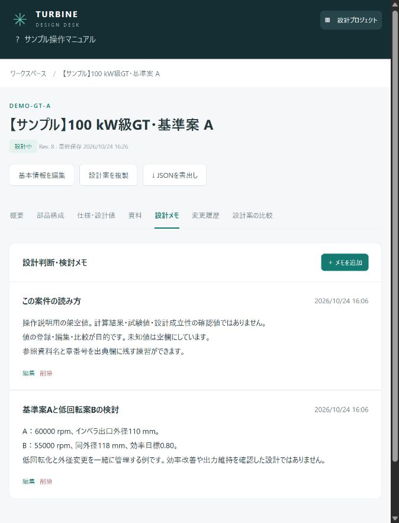
A案とB案を比較する
- A案を開き、「設計案の比較」に切り替えます。
- 比較対象で
DEMO-GT-B / 【サンプル】100 kW級GT・低回転案 Bを選びます。 - 表をスクロールし、以下の3つの値の差分を確認します。違いのある行は薄い黄色になります。
| 比較項目 | 基準案 A | 低回転案 B |
|---|---|---|
| 設計回転数 | 60000 rpm | 55000 rpm |
| インペラ出口外径 | 110 mm | 118 mm |
| 断熱効率の目標 | 0.78 | 0.80 |
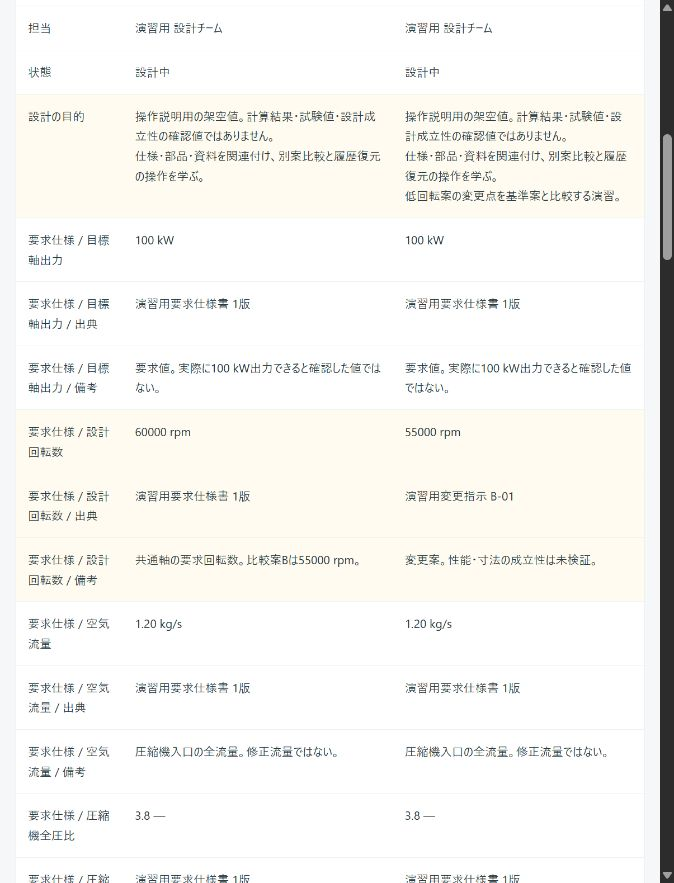
差分件数は「変更された設計変数の数」ではなく、案件名・番号・目的・出典・備考を含む比較行の数です。効率が0.78から0.80になった表示は、目標を手入力で変えた結果です。計算で効率改善を確認した意味ではありません。
自分の別案は「設計案を複製」で作成します。複製は元の案件を保持し、部品・項目のIDを引き継ぐため、名前を変えた部品も対応付けやすくなります。別々に作成した案件では名称を照合します。同名が複数あると登録順で対応付けるため、案や部品には区別できる名前を付けてください。
JSONで持ち出し、別の案件として取り込む
- 案件の上にある「JSONを書出し」を押します。
- 現在の設計情報と現在登録されている添付資料を含む
design-project.jsonが保存されます。履歴は含みません。 - 一覧に戻り、「JSONを取込」でそのファイルを選ぶと、新しい案件として追加されます。元案件は上書きしません。
通常アプリへサンプルを追加する場合は start.bat で起動し、samples/A_基準案.json と samples/B_低回転案.json を取り込んでください。案件名に「（取込）」が付きます。取込JSONの参考リンクはサンプル用ポート8772を指すため、サンプル起動中に開くか、左メニューのマニュアルを利用してください。
全案件・全履歴のバックアップは、アプリを終了してから対象のSQLiteファイルをコピーします。通常DBとサンプルDBを取り違えないでください。JSON・DBは暗号化していません。
自分の案件に置き換えるとき
- 通常アプリで「新規プロジェクト」を作ります。
- サンプルの値をそのまま使わず、要求仕様書など確認できる情報から登録します。
- 担当・用途・エンジン構成を記入し、部品構成を整理します。
- 各値の単位・全圧/静圧・全温/静温・全周/一流路などの定義と出典を記録します。
- 未決定値は空欄にし、出典欄やメモに「誰が何を確認するか」を残します。
- 別案は複製し、比較表で変更を確認します。現在の情報をJSONで書き出します。
| 目的 | 使う機能 |
|---|---|
| 仕様を一覧化したい | 仕様・設計値 → 案件全体 |
| 翼寸法・材料候補を残したい | 仕様・設計値 → 各部品 |
| 図面・CADファイル・説明資料を保管したい | 資料 → ファイルを追加（プレビューや解析はしない） |
| 採用理由・未決事項を残したい | 設計メモ |
| 条件違いを比較したい | 設計案を複製 → 設計案の比較 |
| 編集を取り消したい | 変更履歴 → 案件全体の復元 |
| 終わった案件を隠したい | 基本情報の状態を「保管」。一覧の状態フィルターで再表示。 |
サンプルを最初からやり直す場合は、サンプルアプリを終了し、samples/sample-designs.sqlite3 を別名で保存してから start_sample.bat を起動します。既存DBがある場合、起動処理は上書きしません。python create_samples.py --directory samples-new なら、別フォルダに新しい初期サンプルを作れます。
確認済みの範囲
2026年10月24日、サンプル専用DBを用いて、画面表示、回転数の変更・保存・復元、部品別の切替、添付選択・ダウンロード・登録解除、A/B比較を実際に操作しました。掲載画像はその実画面です。画像は撮影した時点のリビジョン・日時・表示幅のため、操作を続けた現在の画面と異なる場合があります。
サンプルの初期値は生成スクリプトで登録し、その後の変更・保存・復元・添付操作はブラウザで実施しています。設計値をすべて一つずつ手入力したという意味ではありません。
計算・実機性能・強度・振動・製造可能性の確認は行っていません。複数ユーザーでの共同編集、外部CAD/CFDの起動・結果取込、計算結果の自動更新も今回の範囲外です。自動テストと追加の操作結果はアプリフォルダの VERIFICATION.md を参照してください。